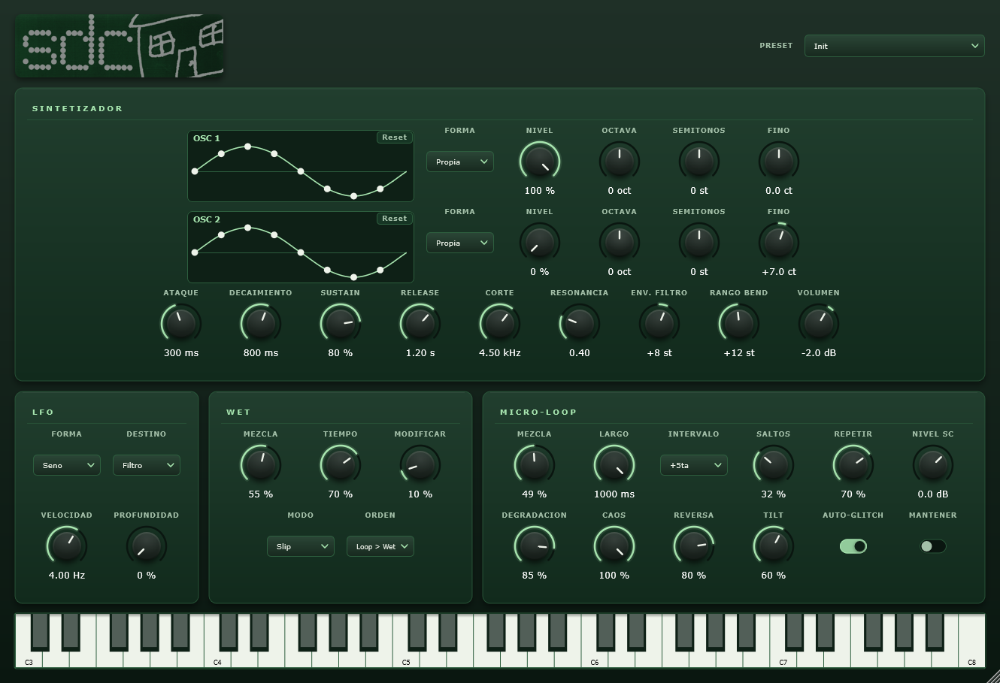

demos y versiones
de la primera idea a la versión final, todo queda acá
diario del disco
fotos, arte e ideas sueltas

hecho con su propio sinte
El disco se está grabando con un instrumento hecho para él: Salir de Casa, un sintetizador con ondas que se dibujan moviendo puntos, un LFO y micro-loops que traban el sonido como un recuerdo que se repite.
cuando salga el disco, sale el plugin
vst3 · windows · en desarrollo